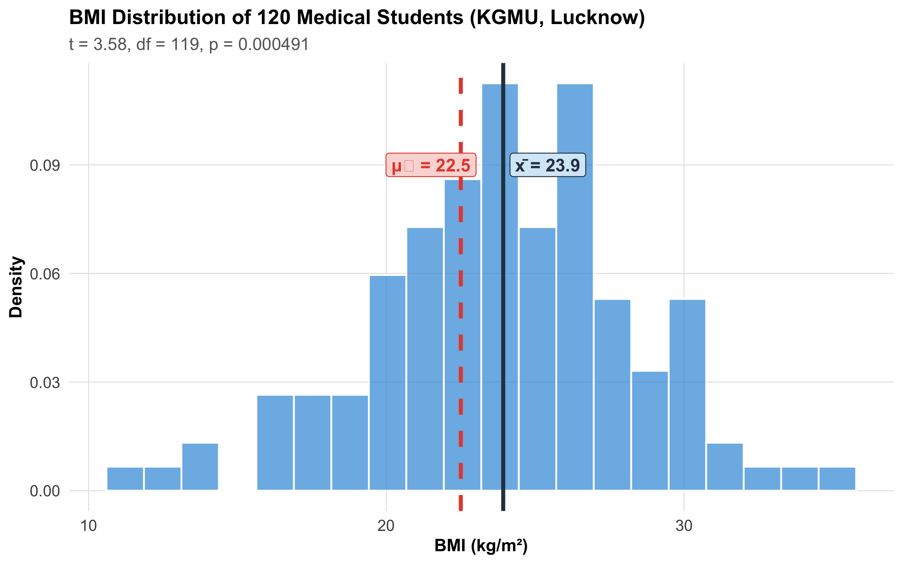
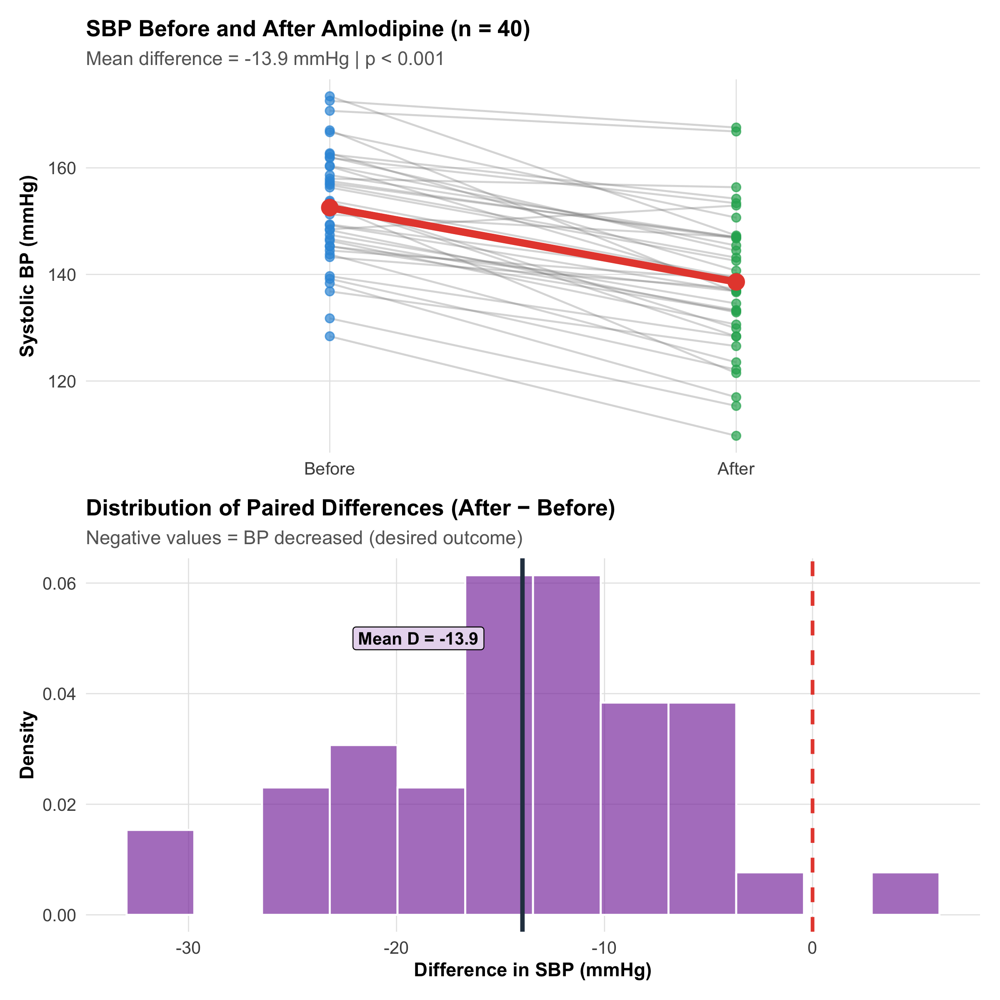
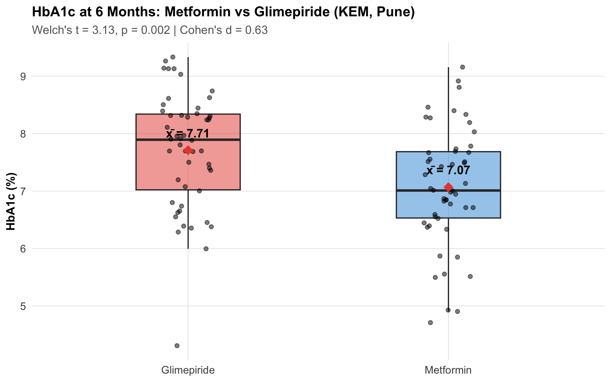
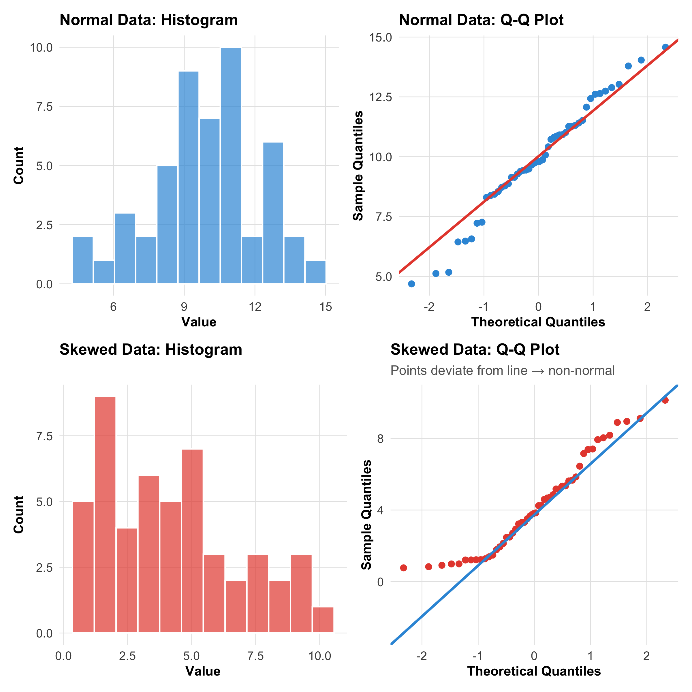
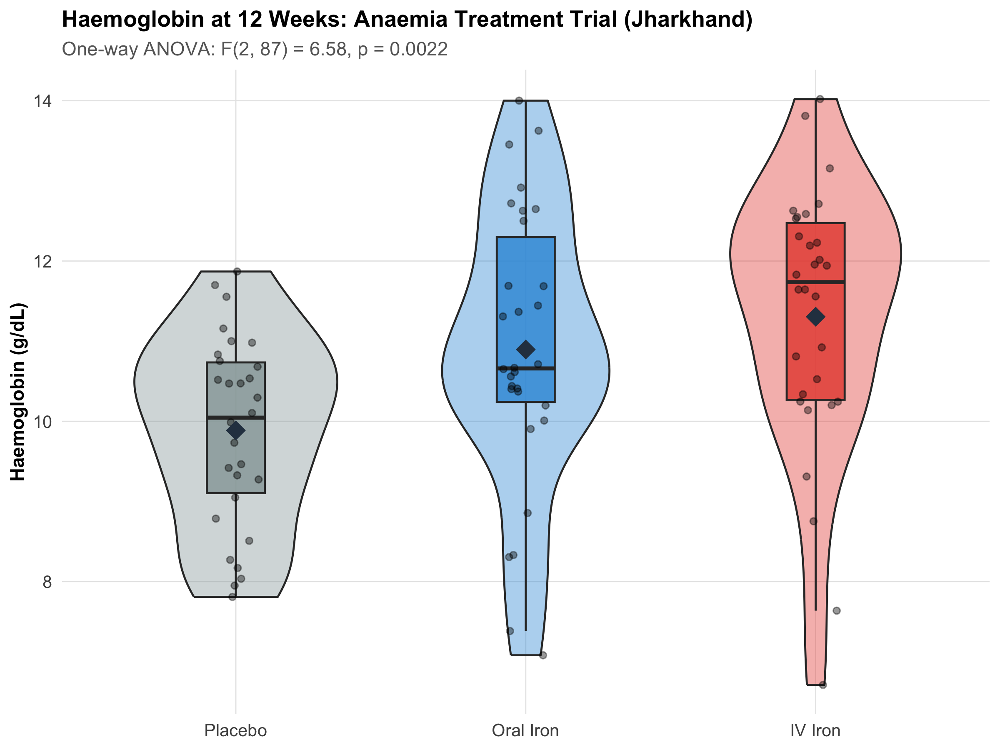
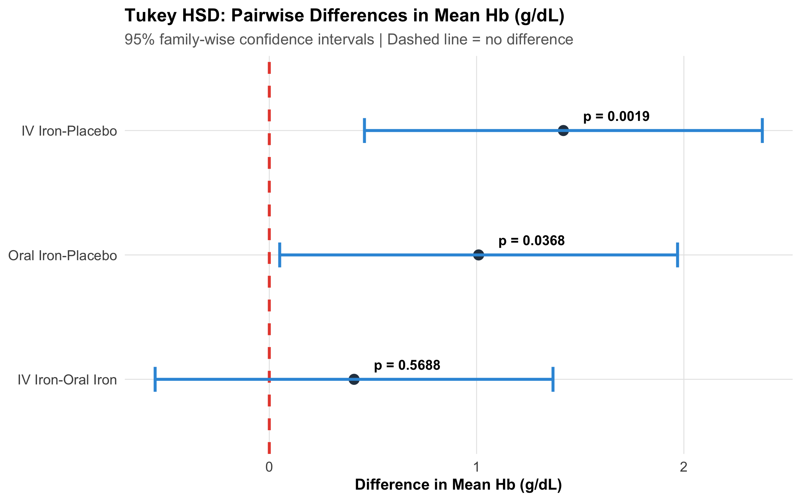
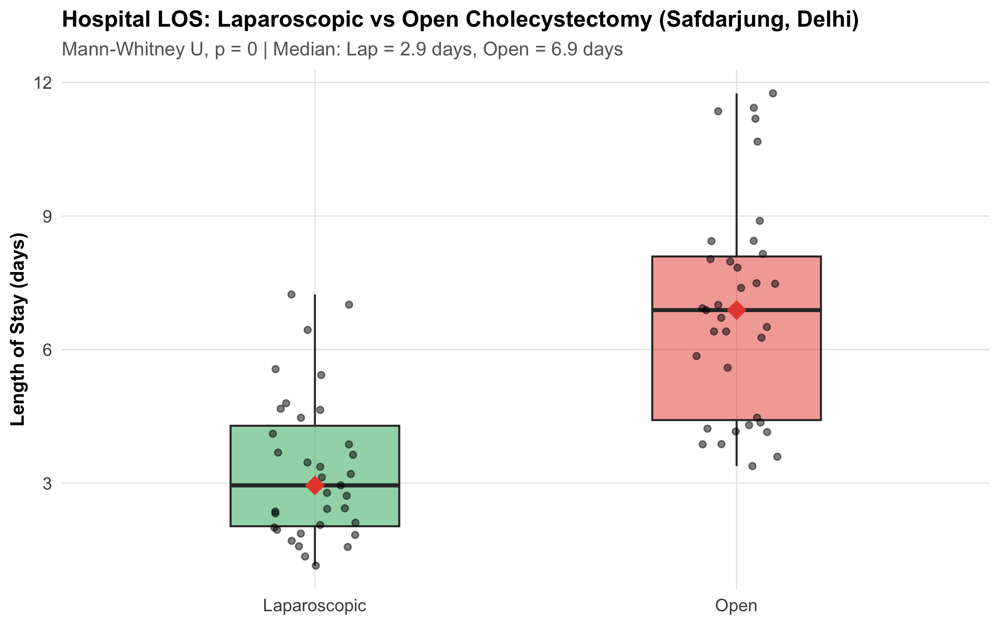
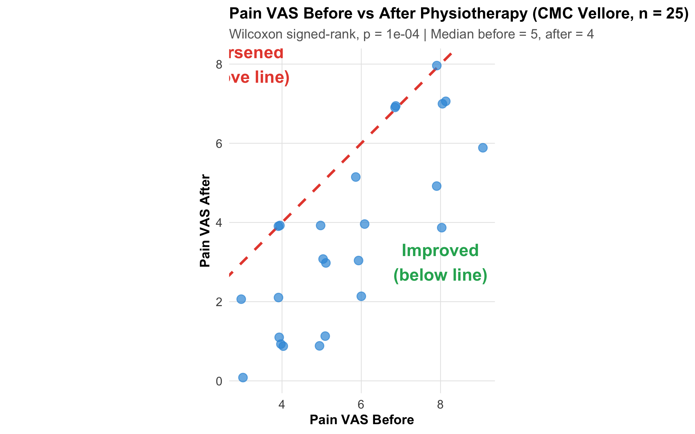
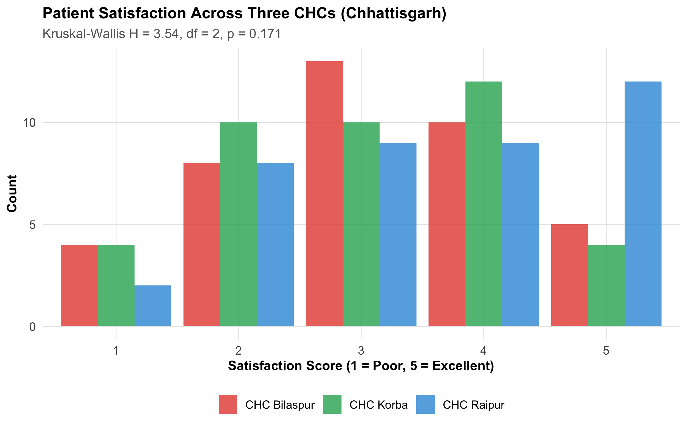

Choose and perform one-sample, paired, and independent-samples t-tests
Interpret t-test results including test statistic, degrees of freedom, p-value, and confidence interval
Assess assumptions for t-tests (normality, equal variance) and respond when they are violated
Conduct one-way ANOVA for comparing three or more groups
Perform post-hoc comparisons (Tukey, Bonferroni, Dunnett) and explain why they are needed
Apply non-parametric alternatives (Mann-Whitney U, Wilcoxon signed-rank, Kruskal-Wallis) when assumptions fail
Navigate a decision flowchart to select the correct test for any group comparison
Report results with effect sizes (Cohen’s d), confidence intervals, and clinical interpretation
10.2 Clinical Hook
An ICMR-funded multicentre trial enrolls 90 women with iron-deficiency anaemia across three government hospitals in Jharkhand. They are randomized to three arms: oral ferrous sulfate (standard), IV ferric carboxymaltose (newer), and placebo (control), with n = 30 per group. After 12 weeks, mean haemoglobin (± SD) is:
Oral iron: 10.8 ± 1.4 g/dL
IV iron: 11.5 ± 1.6 g/dL
Placebo: 9.6 ± 1.5 g/dL
The research questions cascade:
Is oral iron better than placebo? (Two-group comparison → t-test)
Are all three groups different? (Three-group comparison → ANOVA)
Which pairs differ, and by how much? (Post-hoc comparisons)
What if the data aren’t normally distributed? (Non-parametric alternatives)
This module gives you the tools to answer each question correctly.
10.3 Section 1: The One-Sample t-Test
When to Use
You have one group and want to test whether its mean differs from a known or hypothesized value.
Formula
\[t = \frac{\bar{x} - \mu_0}{s / \sqrt{n}}\]
where \(\bar{x}\) = sample mean, \(\mu_0\) = hypothesized population mean, \(s\) = sample SD, \(n\) = sample size. Degrees of freedom: df = n − 1.
Worked Example: BMI of Medical Students in Lucknow
Note
A study of 120 first-year MBBS students at KGMU, Lucknow measures BMI. The national average for 18–22 year-olds is 22.5 kg/m². Is this cohort different?
# Simulate data matching the summary statisticsset.seed(42)bmi<-rnorm(120, mean =23.8, sd =4.2)bmi_mean<-mean(bmi)bmi_sd<-sd(bmi)mu0<-22.5# Perform the testt_result<-t.test(bmi, mu =mu0)# Visualizeggplot(tibble(BMI =bmi), aes(x =BMI))+geom_histogram(aes(y =after_stat(density)), bins =20, fill ="#3498db", alpha =0.7, color ="white")+geom_vline(xintercept =mu0, linetype ="dashed", linewidth =1.2, color ="#e74c3c")+geom_vline(xintercept =bmi_mean, linetype ="solid", linewidth =1.2, color ="#2c3e50")+annotate("label", x =mu0-1, y =0.09, label =paste0("μ₀ = ", mu0), fill ="#fadbd8", color ="#e74c3c", fontface ="bold", size =4)+annotate("label", x =bmi_mean+1.5, y =0.09, label =paste0("x̄ = ", round(bmi_mean, 1)), fill ="#d6eaf8", color ="#2c3e50", fontface ="bold", size =4)+labs(title ="BMI Distribution of 120 Medical Students (KGMU, Lucknow)", subtitle =paste0("t = ", round(t_result$statistic, 2),", df = ", t_result$parameter,", p = ", format.pval(t_result$p.value, digits =3)), x ="BMI (kg/m²)", y ="Density")+theme_clean()

Figure 10.1: One-sample t-test: Is the mean BMI of medical students different from the national average of 22.5?
Tip
Interpretation:
t = 3.58, df = 119, p = 0.000491
95% CI for true mean: (23.1, 24.7) kg/m²
Since the CI does not include 22.5, we reject H₀ — the students’ mean BMI is significantly higher than the national average.
Clinical note: A 1.3 kg/m² difference, while statistically significant, may not be clinically alarming. Always consider effect size and clinical context.
10.4 Section 2: The Paired t-Test
When to Use
You have two measurements on the same subjects (before/after, left eye/right eye, two methods on same specimen). The paired design removes between-subject variability, making it more powerful.
Formula
Compute the difference for each pair: \(D_i = \text{After}_i - \text{Before}_i\), then apply a one-sample t-test to the differences:
\[t = \frac{\bar{D} - 0}{s_D / \sqrt{n}}\]
Worked Example: BP Before and After Amlodipine
Note
40 hypertensive patients at a PHC in Kolar (Karnataka) are started on amlodipine 5 mg daily. Systolic BP is measured before treatment and again at 8 weeks.
Code
set.seed(123)n_paired<-40bp_before<-rnorm(n_paired, mean =152, sd =12)bp_reduction<-rnorm(n_paired, mean =14, sd =8)# Mean reduction ~14 mmHgbp_after<-bp_before-bp_reductionbp_data<-tibble( Patient =1:n_paired, Before =bp_before, After =bp_after, Difference =bp_after-bp_before)# Paired t-testpaired_result<-t.test(bp_data$After, bp_data$Before, paired =TRUE)# Spaghetti plotp_spag<-bp_data%>%pivot_longer(cols =c(Before, After), names_to ="Time", values_to ="SBP")%>%mutate(Time =factor(Time, levels =c("Before", "After")))%>%ggplot(aes(x =Time, y =SBP, group =Patient))+geom_line(alpha =0.3, color ="gray50")+geom_point(aes(color =Time), size =2, alpha =0.7)+stat_summary(aes(group =1), fun =mean, geom ="line", linewidth =2, color ="#e74c3c")+stat_summary(aes(group =1), fun =mean, geom ="point", size =4, color ="#e74c3c")+scale_color_manual(values =c("Before"="#3498db", "After"="#27ae60"))+labs(title ="SBP Before and After Amlodipine (n = 40)", subtitle =paste0("Mean difference = ", round(mean(bp_data$Difference), 1)," mmHg | p ", ifelse(paired_result$p.value<0.001, "< 0.001",paste0("= ", round(paired_result$p.value, 4)))), y ="Systolic BP (mmHg)", x =NULL)+theme_clean()+theme(legend.position ="none")# Histogram of differencesp_diff<-ggplot(bp_data, aes(x =Difference))+geom_histogram(aes(y =after_stat(density)), bins =12, fill ="#8e44ad", alpha =0.7, color ="white")+geom_vline(xintercept =0, linetype ="dashed", color ="#e74c3c", linewidth =1)+geom_vline(xintercept =mean(bp_data$Difference), linewidth =1.2, color ="#2c3e50")+annotate("label", x =mean(bp_data$Difference)-5, y =0.05, label =paste0("Mean D = ", round(mean(bp_data$Difference), 1)), fill ="#e8daef", fontface ="bold", size =3.5)+labs(title ="Distribution of Paired Differences (After − Before)", subtitle ="Negative values = BP decreased (desired outcome)", x ="Difference in SBP (mmHg)", y ="Density")+theme_clean()p_spag/p_diff

Figure 10.2: Paired t-test: systolic BP before and after 8 weeks of amlodipine. Each line connects the same patient’s two measurements.
Tip
Result: Mean reduction = 13.9 mmHg (95% CI: 11.5 to 16.4), t = -11.49, p < 0.001.
Why paired? If we had used an independent t-test (ignoring pairing), we would include between-patient variability (some patients start at 140, others at 170). The paired design eliminates this, leaving only the treatment effect — making the test much more powerful.
Warning
Common mistake: Using an independent t-test when data are paired. This ignores the within-subject correlation, inflates the SE, and reduces power — you may miss a real treatment effect.
10.5 Section 3: The Independent Two-Sample t-Test
When to Use
You have two independent groups and want to compare their means. The groups are different people (no pairing).
Two Versions
Code
tibble( Feature =c("Assumption", "Pooled variance?", "Degrees of freedom", "Default in R?", "Recommendation"), `Student's t` =c("Equal variances in both groups", "Yes (pooled SD)", "n₁ + n₂ − 2", "No", "Only if variances clearly equal"), `Welch's t` =c("No equal variance assumption", "No (separate SEs)", "Adjusted (Welch-Satterthwaite)", "YES (default)", "**Use this by default**"))%>%kable(format ="html")%>%kable_styling(full_width =TRUE, font_size =11)
Table 10.1: Student’s vs Welch’s t-test
Feature
Student's t
Welch's t
Assumption
Equal variances in both groups
No equal variance assumption
Pooled variance?
Yes (pooled SD)
No (separate SEs)
Degrees of freedom
n₁ + n₂ − 2
Adjusted (Welch-Satterthwaite)
Default in R?
No
YES (default)
Recommendation
Only if variances clearly equal
**Use this by default**
Worked Example: HbA1c in Two Diabetes Drug Arms
Note
A trial at KEM Hospital, Pune compares metformin vs glimepiride in newly diagnosed Type 2 DM (n = 50 per group, 6 months). Outcome: HbA1c at 6 months.
Code
set.seed(42)metformin<-rnorm(50, mean =7.1, sd =0.9)glimepiride<-rnorm(50, mean =7.6, sd =1.1)drug_data<-tibble( HbA1c =c(metformin, glimepiride), Drug =rep(c("Metformin", "Glimepiride"), each =50))# Welch's t-test (default)welch_result<-t.test(HbA1c~Drug, data =drug_data)# Cohen's dpooled_sd<-sqrt(((49*sd(metformin)^2)+(49*sd(glimepiride)^2))/98)cohens_d<-(mean(glimepiride)-mean(metformin))/pooled_sdggplot(drug_data, aes(x =Drug, y =HbA1c, fill =Drug))+geom_boxplot(alpha =0.5, outlier.shape =NA, width =0.4)+geom_jitter(width =0.1, alpha =0.5, size =1.5)+stat_summary(fun =mean, geom ="point", shape =18, size =4, color ="#e74c3c")+stat_summary(fun =mean, geom ="text", aes(label =paste0("x̄ = ", round(after_stat(y), 2))), vjust =-1.5, size =4, fontface ="bold")+scale_fill_manual(values =c("Metformin"="#3498db", "Glimepiride"="#e74c3c"))+labs(title ="HbA1c at 6 Months: Metformin vs Glimepiride (KEM, Pune)", subtitle =paste0("Welch's t = ", round(welch_result$statistic, 2),", p = ", round(welch_result$p.value, 3)," | Cohen's d = ", round(cohens_d, 2)), y ="HbA1c (%)", x =NULL)+theme_clean()+theme(legend.position ="none")

Figure 10.3: Independent t-test: HbA1c at 6 months, metformin vs glimepiride. Box plots with individual data points and group means.
Tip
Result:
Mean difference: 0.64% (95% CI: -1.05 to -0.24)
Welch’s t = 3.13, p = 0.002
Cohen’s d = 0.63 (medium effect)
Interpretation: Metformin achieved statistically significantly lower HbA1c than glimepiride. The effect size (d ≈ 0.5) suggests a clinically meaningful difference. Compare the difference to the MCID for HbA1c (0.5%) before making treatment decisions.
10.6 Section 4: Checking Assumptions
Before applying any t-test, verify three assumptions:
4.1 Independence
This is a study design issue, not a statistical test. Each observation must come from a different, independent subject. Violated in clustered data (e.g., multiple teeth per patient, students within classrooms).
4.2 Normality
Code
set.seed(42)normal_data<-rnorm(50, mean =10, sd =2)skewed_data<-rgamma(50, shape =2, rate =0.5)p1<-ggplot(tibble(x =normal_data), aes(x))+geom_histogram(bins =12, fill ="#3498db", alpha =0.7, color ="white")+labs(title ="Normal Data: Histogram", x ="Value", y ="Count")+theme_clean()p2<-ggplot(tibble(x =normal_data), aes(sample =x))+stat_qq(color ="#3498db", size =2)+stat_qq_line(color ="#e74c3c", linewidth =1)+labs(title ="Normal Data: Q-Q Plot", x ="Theoretical Quantiles", y ="Sample Quantiles")+theme_clean()p3<-ggplot(tibble(x =skewed_data), aes(x))+geom_histogram(bins =12, fill ="#e74c3c", alpha =0.7, color ="white")+labs(title ="Skewed Data: Histogram", x ="Value", y ="Count")+theme_clean()p4<-ggplot(tibble(x =skewed_data), aes(sample =x))+stat_qq(color ="#e74c3c", size =2)+stat_qq_line(color ="#3498db", linewidth =1)+labs(title ="Skewed Data: Q-Q Plot", subtitle ="Points deviate from line → non-normal", x ="Theoretical Quantiles", y ="Sample Quantiles")+theme_clean()(p1+p2)/(p3+p4)

Figure 10.4: How to check normality: histogram (left) and Q-Q plot (right). Top row: approximately normal data. Bottom row: right-skewed data — consider non-parametric test if n is small.
Tip
Practical rules:
n ≥ 30 per group: t-test is robust to moderate non-normality (CLT from Module 8!)
n < 30 and data skewed: Use a non-parametric alternative
Visual check (histogram + Q-Q plot) is more useful than Shapiro-Wilk for practical decisions
Shapiro-Wilk test: p > 0.05 → normality not rejected. But with large n, it detects trivial departures — rely on visuals.
4.3 Equal Variances (for Independent t-test)
Important
Levene’s test tests H₀: σ₁² = σ₂². If p < 0.05, variances are unequal.
Better approach: Just use Welch’s t-test by default — it performs well whether variances are equal or not, and avoids the preliminary test problem (testing assumptions with another test inflates overall error).
10.7 Section 5: One-Way ANOVA
When to Use
You have three or more independent groups and want to test whether any group means differ.
The Logic: Partitioning Variance
ANOVA asks: “Is the variability between groups larger than the variability within groups?”
\[F = \frac{MS_{\text{between}}}{MS_{\text{within}}} = \frac{\text{Variance due to treatment}}{\text{Variance due to random error}}\]
Large F: Between-group variance >> within-group variance → groups are different
Small F (near 1): Between-group ≈ within-group → no evidence of group differences
Worked Example: Anaemia Trial (from Clinical Hook)
Code
set.seed(42)oral_iron<-rnorm(30, mean =10.8, sd =1.4)iv_iron<-rnorm(30, mean =11.5, sd =1.6)placebo<-rnorm(30, mean =9.6, sd =1.5)anaemia_data<-tibble( Hb =c(oral_iron, iv_iron, placebo), Treatment =factor(rep(c("Oral Iron", "IV Iron", "Placebo"), each =30), levels =c("Placebo", "Oral Iron", "IV Iron")))# ANOVAanova_result<-aov(Hb~Treatment, data =anaemia_data)anova_summary<-summary(anova_result)f_stat<-anova_summary[[1]]$`F value`[1]p_val<-anova_summary[[1]]$`Pr(>F)`[1]ggplot(anaemia_data, aes(x =Treatment, y =Hb, fill =Treatment))+geom_violin(alpha =0.4, width =0.7)+geom_boxplot(width =0.2, alpha =0.8, outlier.shape =NA)+geom_jitter(width =0.08, alpha =0.4, size =1.5)+stat_summary(fun =mean, geom ="point", shape =18, size =5, color ="#2c3e50")+scale_fill_manual(values =c("Placebo"="#95a5a6", "Oral Iron"="#3498db", "IV Iron"="#e74c3c"))+labs(title ="Haemoglobin at 12 Weeks: Anaemia Treatment Trial (Jharkhand)", subtitle =paste0("One-way ANOVA: F(2, 87) = ", round(f_stat, 2),", p ", ifelse(p_val<0.001, "< 0.001", paste0("= ", round(p_val, 4)))), y ="Haemoglobin (g/dL)", x =NULL)+theme_clean()+theme(legend.position ="none")

Figure 10.5: One-way ANOVA: Haemoglobin at 12 weeks across three treatment arms. Violin plots show distribution shape; diamonds mark group means.
What ANOVA tells you: At least one group mean differs from the others.
What ANOVA does NOT tell you:Which groups differ. For that, you need post-hoc comparisons (next section).
10.8 Section 6: Post-Hoc Comparisons
The Multiple Comparisons Problem
With k = 3 groups, there are \(\binom{3}{2}\) = 3 pairwise comparisons. Doing three separate t-tests at α = 0.05 inflates the overall Type I error to 1 − (0.95)³ ≈ 14%. With k = 5 groups (10 comparisons), it reaches ~40%.
Common Post-Hoc Methods
Code
tibble( Method =c("Tukey HSD", "Bonferroni", "Dunnett", "Scheffé"), `Best for` =c("All pairwise comparisons", "Few pre-planned comparisons", "Multiple treatments vs one control", "Complex contrasts (e.g., Group 1 vs Groups 2+3)"), `Conservatism` =c("Moderate", "Conservative", "Moderate", "Most conservative"), `Power` =c("Good", "Lower", "Good for its purpose", "Lowest"))%>%kable(format ="html")%>%kable_styling(full_width =TRUE, font_size =11)
Table 10.3: Choosing a post-hoc method
Method
Best for
Conservatism
Power
Tukey HSD
All pairwise comparisons
Moderate
Good
Bonferroni
Few pre-planned comparisons
Conservative
Lower
Dunnett
Multiple treatments vs one control
Moderate
Good for its purpose
Scheffé
Complex contrasts (e.g., Group 1 vs Groups 2+3)
Most conservative
Lowest
Tukey HSD for the Anaemia Trial
Code
tukey_result<-TukeyHSD(anova_result)tukey_df<-as.data.frame(tukey_result$Treatment)tukey_df$Comparison<-rownames(tukey_df)ggplot(tukey_df, aes(x =diff, y =reorder(Comparison, diff)))+geom_vline(xintercept =0, linetype ="dashed", color ="#e74c3c", linewidth =1)+geom_point(size =3, color ="#2c3e50")+geom_errorbarh(aes(xmin =lwr, xmax =upr), height =0.2, linewidth =1, color ="#3498db")+geom_text(aes(label =paste0("p = ", round(`p adj`, 4))), hjust =-0.3, vjust =-1, size =3.5, fontface ="bold")+labs(title ="Tukey HSD: Pairwise Differences in Mean Hb (g/dL)", subtitle ="95% family-wise confidence intervals | Dashed line = no difference", x ="Difference in Mean Hb (g/dL)", y =NULL)+theme_clean()

Figure 10.6: Tukey HSD pairwise comparisons with 95% family-wise confidence intervals. Intervals that don’t cross zero indicate significant differences.
Both iron formulations outperform placebo. Whether IV iron is significantly better than oral iron depends on the p-value and the clinical MCID for haemoglobin improvement.
10.9 Section 7: Non-Parametric Alternatives
When t-test/ANOVA assumptions are violated — data are heavily skewed, sample is small, or the outcome is ordinal — use non-parametric tests. These work with ranks rather than raw values, making them robust to outliers and non-normality.
7.1 Mann-Whitney U Test (Two Independent Groups)
The non-parametric alternative to the independent t-test. Compares whether one distribution tends to have larger values than the other.
Note
Example: Hospital length of stay (LOS) for laparoscopic vs open cholecystectomy at Safdarjung Hospital, Delhi. LOS is typically right-skewed (most patients leave quickly, a few stay very long).
Code
set.seed(42)los_lap<-rgamma(35, shape =2, rate =0.8)+1# Laparoscopic: shorter stayslos_open<-rgamma(35, shape =3, rate =0.6)+2# Open: longer stayslos_data<-tibble( LOS =c(los_lap, los_open), Surgery =rep(c("Laparoscopic", "Open"), each =35))mw_result<-wilcox.test(LOS~Surgery, data =los_data)ggplot(los_data, aes(x =Surgery, y =LOS, fill =Surgery))+geom_boxplot(alpha =0.5, width =0.4, outlier.shape =NA)+geom_jitter(width =0.1, alpha =0.5, size =1.5)+stat_summary(fun =median, geom ="point", shape =18, size =5, color ="#e74c3c")+scale_fill_manual(values =c("Laparoscopic"="#27ae60", "Open"="#e74c3c"))+labs(title ="Hospital LOS: Laparoscopic vs Open Cholecystectomy (Safdarjung, Delhi)", subtitle =paste0("Mann-Whitney U, p = ", round(mw_result$p.value, 4)," | Median: Lap = ", round(median(los_lap), 1)," days, Open = ", round(median(los_open), 1), " days"), y ="Length of Stay (days)", x =NULL)+theme_clean()+theme(legend.position ="none")

Figure 10.7: Mann-Whitney U test: hospital length of stay is right-skewed, making a non-parametric test appropriate. Medians (red diamonds) are compared rather than means.
7.2 Wilcoxon Signed-Rank Test (Paired Data)
The non-parametric alternative to the paired t-test. Useful for before-after comparisons with ordinal or skewed data.
Note
Example: Pain scores (VAS 0–10) before and after physiotherapy in 25 knee OA patients at CMC Vellore. Pain scores are ordinal — a non-parametric paired test is appropriate.
Code
set.seed(42)pain_before<-sample(3:9, 25, replace =TRUE, prob =c(0.05, 0.1, 0.15, 0.25, 0.2, 0.15, 0.1))pain_after<-pmax(0, pain_before-sample(0:4, 25, replace =TRUE, prob =c(0.1, 0.2, 0.35, 0.25, 0.1)))wilcox_result<-wilcox.test(pain_before, pain_after, paired =TRUE)ggplot(tibble(Before =pain_before, After =pain_after), aes(x =Before, y =After))+geom_abline(slope =1, intercept =0, linetype ="dashed", color ="#e74c3c", linewidth =1)+geom_jitter(width =0.15, height =0.15, size =3, alpha =0.7, color ="#3498db")+annotate("text", x =8, y =3, label ="Improved\n(below line)", fontface ="bold", color ="#27ae60", size =5)+annotate("text", x =3, y =8, label ="Worsened\n(above line)", fontface ="bold", color ="#e74c3c", size =5)+labs(title ="Pain VAS Before vs After Physiotherapy (CMC Vellore, n = 25)", subtitle =paste0("Wilcoxon signed-rank, p = ", round(wilcox_result$p.value, 4)," | Median before = ", median(pain_before),", after = ", median(pain_after)), x ="Pain VAS Before", y ="Pain VAS After")+coord_equal()+theme_clean()

Figure 10.8: Wilcoxon signed-rank test: pain scores before and after physiotherapy. Most patients improve (dots below the diagonal).
7.3 Kruskal-Wallis Test (Three or More Groups)
The non-parametric alternative to one-way ANOVA. Compares distributions across three or more groups using ranks.
Note
Example: Patient satisfaction scores (Likert 1–5) across three CHCs in Chhattisgarh. Likert data are ordinal — ANOVA assumptions don’t hold.
Code
set.seed(42)sat_a<-sample(1:5, 40, replace =TRUE, prob =c(0.05, 0.10, 0.25, 0.35, 0.25))sat_b<-sample(1:5, 40, replace =TRUE, prob =c(0.10, 0.20, 0.30, 0.25, 0.15))sat_c<-sample(1:5, 40, replace =TRUE, prob =c(0.15, 0.25, 0.30, 0.20, 0.10))sat_data<-tibble( Satisfaction =c(sat_a, sat_b, sat_c), CHC =rep(c("CHC Raipur", "CHC Bilaspur", "CHC Korba"), each =40))kw_result<-kruskal.test(Satisfaction~CHC, data =sat_data)ggplot(sat_data, aes(x =factor(Satisfaction), fill =CHC))+geom_bar(position ="dodge", alpha =0.8)+scale_fill_manual(values =c("CHC Raipur"="#3498db", "CHC Bilaspur"="#e74c3c", "CHC Korba"="#27ae60"))+labs(title ="Patient Satisfaction Across Three CHCs (Chhattisgarh)", subtitle =paste0("Kruskal-Wallis H = ", round(kw_result$statistic, 2),", df = ", kw_result$parameter,", p = ", round(kw_result$p.value, 3)), x ="Satisfaction Score (1 = Poor, 5 = Excellent)", y ="Count", fill =NULL)+theme_clean()

Figure 10.9: Kruskal-Wallis test: patient satisfaction (Likert 1–5) across three community health centres. Bar heights show count per satisfaction level.
10.10 Section 8: Decision Flowchart — Choosing the Right Test
Code
decision<-tibble( Question =c("How many groups?","Two groups","Three+ groups","Are data paired?","Are data paired?","Normal data (or n ≥ 30)?","Normal data (or n ≥ 30)?","Normal data (or n ≥ 30)?","Normal data (or n ≥ 30)?"), Scenario =c("", "Two", "Three+","Paired, Two", "Independent, Two","Paired, Normal", "Paired, Non-normal","Independent, Normal", "Independent, Non-normal"), Test =c("", "", "","", "","Paired t-test", "Wilcoxon signed-rank","Independent t-test (Welch)", "Mann-Whitney U"))# Display as a structured tabletibble( `Number of Groups` =c("**One**", "**Two (Paired)**", "**Two (Paired)**","**Two (Independent)**", "**Two (Independent)**","**Three+ (Independent)**", "**Three+ (Independent)**"), `Data Type` =c("Continuous", "Normal / n ≥ 30", "Skewed / ordinal / n < 30","Normal / n ≥ 30", "Skewed / ordinal / n < 30","Normal / n ≥ 30", "Skewed / ordinal / n < 30"), `Parametric Test` =c("One-sample t-test", "Paired t-test", "—","Welch's t-test", "—","One-way ANOVA", "—"), `Non-parametric Alternative` =c("Wilcoxon signed-rank (vs μ₀)", "Wilcoxon signed-rank", "Wilcoxon signed-rank","Mann-Whitney U", "Mann-Whitney U","Kruskal-Wallis", "Kruskal-Wallis"), `Post-hoc (if significant)` =c("—", "—", "—", "—", "—","Tukey HSD / Bonferroni", "Dunn's test with Bonferroni"))%>%kable(format ="html", escape =FALSE)%>%kable_styling(full_width =TRUE, font_size =11)%>%row_spec(0, background ="#2c3e50", color ="white", bold =TRUE)%>%column_spec(1, bold =TRUE, width ="18%")
Number of Groups
Data Type
Parametric Test
Non-parametric Alternative
Post-hoc (if significant)
One
Continuous
One-sample t-test
Wilcoxon signed-rank (vs μ₀)
—
Two (Paired)
Normal / n ≥ 30
Paired t-test
Wilcoxon signed-rank
—
Two (Paired)
Skewed / ordinal / n
—
Wilcoxon signed-rank
—
Two (Independent)
Normal / n ≥ 30
Welch’s t-test
Mann-Whitney U
—
Two (Independent)
Skewed / ordinal / n
—
Mann-Whitney U
—
Three+ (Independent)
Normal / n ≥ 30
One-way ANOVA
Kruskal-Wallis
Tukey HSD / Bonferroni
Three+ (Independent)
Skewed / ordinal / n
—
Kruskal-Wallis
Dunn’s test with Bonferroni
Figure 10.10: Decision flowchart for choosing the correct test for comparing group means.
Tip
Practical heuristic:
Visualize first — always plot your data before choosing a test
n ≥ 30 per group? → t-test/ANOVA are robust even with mild non-normality
Outliers dominate? → non-parametric or consider transformation
When in doubt: Welch’s t-test and report the result. If conclusions differ between parametric and non-parametric, mention both.
10.11 Section 9: Reporting Results
Tip
Reporting template for two-group comparisons:
“Groups differed significantly [or did not differ] in [outcome] (Welch’s t = X.XX, df = Y, p = Z.ZZ). The [treatment] group had a mean of A ± B, compared to C ± D in the [control] group. The mean difference was E (95% CI: F to G), representing a [small/medium/large] effect (Cohen’s d = H).”
For ANOVA:
“A one-way ANOVA revealed significant differences in [outcome] across [k] groups (F(df₁, df₂) = X.XX, p = Z.ZZ). Post-hoc Tukey HSD indicated that [Group A] was significantly higher than [Group B] (Δ = E, 95% CI: F to G, adjusted p = Z).”
Warning
Common reporting mistakes:
Reporting only the p-value without the test statistic, df, or effect size
Writing “the groups were not different” instead of “no significant difference was found” (absence of evidence ≠ evidence of absence — Module 8!)
Using “significant” without specifying statistical significance vs clinical significance
Performing multiple t-tests instead of ANOVA when comparing 3+ groups
Reporting means for ordinal data (report medians and IQR instead)
10.12 Section 10: Summary and Key Takeaways
Important
Test Selection Summary:
Situation
Test
Measure
One sample vs known value
One-sample t
Mean, CI, t, p
Two paired groups
Paired t-test (or Wilcoxon signed-rank)
Mean diff, CI, d
Two independent groups
Welch’s t-test (or Mann-Whitney U)
Mean diff, CI, d
Three+ independent groups
One-way ANOVA (or Kruskal-Wallis)
F, post-hoc CIs
Tip
Key principles:
Always visualize before testing — boxplots, histograms, Q-Q plots
Welch’s t-test should be your default for two independent groups
ANOVA first, then post-hoc — never multiple t-tests
Non-parametric when: n < 30 and skewed, ordinal data, or outliers dominate
Report effect sizes (Cohen’s d) — a significant p-value with d = 0.1 is trivial
Report CIs — they show precision and allow clinical interpretation
The CLT (Module 8) protects you with n ≥ 30, but not against outliers
10.13 Practice Questions: NEET PG Style MCQs
Q1: Choosing the Right Test
A researcher compares blood glucose levels before and after a yoga intervention in 30 diabetic patients. The data are approximately normally distributed. Which test is most appropriate?
Code
make_mcq( id ="m9q1", question ="Blood glucose before and after yoga in 30 patients (normal data). Which test?", options =c("Independent-samples t-test"="Wrong — the data are paired (same patients measured twice), not independent groups.","answer:Paired t-test"="Correct! Same patients measured before and after → paired design. Data are normal, so the parametric paired t-test is appropriate.","Mann-Whitney U test"="Wrong — Mann-Whitney is for independent groups with non-normal data. Here data are paired and normal.","Chi-square test"="Wrong — Chi-square is for categorical data. Blood glucose is continuous."))
✘ A. Independent-samples t-test — Wrong — the data are paired (same patients measured twice), not independent groups.
✔ B. Paired t-test — Correct! Same patients measured before and after → paired design. Data are normal, so the parametric paired t-test is appropriate.
✘ C. Mann-Whitney U test — Wrong — Mann-Whitney is for independent groups with non-normal data. Here data are paired and normal.
✘ D. Chi-square test — Wrong — Chi-square is for categorical data. Blood glucose is continuous.
Q2: ANOVA Interpretation
An ANOVA comparing serum ferritin across four dietary groups yields F(3, 76) = 1.82, p = 0.15. Which conclusion is correct?
Code
make_mcq( id ="m9q2", question ="ANOVA: F(3,76) = 1.82, p = 0.15. Which conclusion is correct?", options =c("All four groups have exactly the same mean ferritin"="Wrong — failing to reject H₀ does not prove the means are equal. It means we lack sufficient evidence to conclude they differ.","answer:There is no significant evidence that the group means differ"="Correct! p = 0.15 > 0.05, so we fail to reject H₀. This does NOT prove equality — the study may be underpowered.","Post-hoc tests should be performed to find which pairs differ"="Wrong — post-hoc tests are only performed after a significant ANOVA (p < 0.05). With p = 0.15, there is no basis for pairwise comparisons.","The result proves the dietary interventions are all equally effective"="Wrong — absence of evidence is not evidence of absence (Module 8). The trial may simply be underpowered."))
✘ A. All four groups have exactly the same mean ferritin — Wrong — failing to reject H₀ does not prove the means are equal. It means we lack sufficient evidence to conclude they differ.
✔ B. There is no significant evidence that the group means differ — Correct! p = 0.15 > 0.05, so we fail to reject H₀. This does NOT prove equality — the study may be underpowered.
✘ C. Post-hoc tests should be performed to find which pairs differ — Wrong — post-hoc tests are only performed after a significant ANOVA (p < 0.05). With p = 0.15, there is no basis for pairwise comparisons.
✘ D. The result proves the dietary interventions are all equally effective — Wrong — absence of evidence is not evidence of absence (Module 8). The trial may simply be underpowered.
Q3: Non-parametric Test Selection
A researcher compares hospital length of stay between three surgical techniques. LOS is heavily right-skewed with several extreme outliers, and n = 15 per group. Which test is most appropriate?
Code
make_mcq( id ="m9q3", question ="LOS across 3 surgical groups, skewed data, n=15/group. Which test?", options =c("One-way ANOVA"="Wrong — ANOVA assumes approximate normality. With n = 15 and heavy skew + outliers, the CLT doesn't protect you sufficiently.","Three separate Mann-Whitney U tests"="Wrong — this inflates Type I error (multiple comparisons problem). Use a single omnibus test first.","answer:Kruskal-Wallis test"="Correct! Three independent groups with non-normal data and small n → Kruskal-Wallis is the non-parametric equivalent of ANOVA. Follow with Dunn's post-hoc if significant.","Paired t-test"="Wrong — the groups are independent (different patients in each technique), not paired."))
✘ A. One-way ANOVA — Wrong — ANOVA assumes approximate normality. With n = 15 and heavy skew + outliers, the CLT doesn’t protect you sufficiently.
✘ B. Three separate Mann-Whitney U tests — Wrong — this inflates Type I error (multiple comparisons problem). Use a single omnibus test first.
✔ C. Kruskal-Wallis test — Correct! Three independent groups with non-normal data and small n → Kruskal-Wallis is the non-parametric equivalent of ANOVA. Follow with Dunn’s post-hoc if significant.
✘ D. Paired t-test — Wrong — the groups are independent (different patients in each technique), not paired.
Q4: Multiple Comparisons
After a significant one-way ANOVA with 5 groups, a researcher performs 10 pairwise t-tests at α = 0.05 without correction. What is the approximate family-wise error rate?
Code
make_mcq( id ="m9q4", question ="5 groups, 10 pairwise t-tests at α = 0.05, no correction. Family-wise error rate?", options =c("0.05 (5%)"="Wrong — that would be true for a single test. With 10 independent tests, error accumulates.","0.10 (10%)"="Wrong — too low. The formula is 1 − (1 − α)^k.","answer:Approximately 0.40 (40%)"="Correct! P(≥1 false positive) = 1 − (0.95)^10 ≈ 0.40. This is why post-hoc corrections (Tukey, Bonferroni) are essential.","0.50 (50%)"="Wrong — close but not accurate. 1 − (0.95)^10 = 0.40, not 0.50."))
✘ A. 0.05 (5%) — Wrong — that would be true for a single test. With 10 independent tests, error accumulates.
✘ B. 0.10 (10%) — Wrong — too low. The formula is 1 − (1 − α)^k.
✔ C. Approximately 0.40 (40%) — Correct! P(≥1 false positive) = 1 − (0.95)^10 ≈ 0.40. This is why post-hoc corrections (Tukey, Bonferroni) are essential.
✘ D. 0.50 (50%) — Wrong — close but not accurate. 1 − (0.95)^10 = 0.40, not 0.50.
Q5: Effect Size Interpretation
Two antihypertensives are compared in an RCT (n = 500 per group). Drug A reduces SBP by 0.5 mmHg more than Drug B (p = 0.04, Cohen’s d = 0.08). What should the clinician conclude?
Code
make_mcq( id ="m9q5", question ="Drug A beats Drug B by 0.5 mmHg (p = 0.04, d = 0.08). Clinician's conclusion?", options =c("Drug A is significantly better and should replace Drug B"="Wrong — 0.5 mmHg is far below the MCID (5–10 mmHg). Statistical significance with a trivial effect size should not change practice.","The p-value of 0.04 proves Drug A is clinically superior"="Wrong — p < 0.05 means the difference is unlikely due to chance, but says nothing about clinical importance. Cohen's d = 0.08 is negligible.","answer:The difference is statistically significant but clinically irrelevant; the effect size is negligible"="Correct! This is the classic 'statistical vs clinical significance' trap (Module 8). With n = 500/group, even tiny differences reach p < 0.05. d = 0.08 is negligible, and 0.5 mmHg is far below MCID.","The sample size was too small to detect a meaningful difference"="Wrong — the opposite! n = 500/group is very large. The problem is that the true effect is trivially small, not that the study is underpowered."))
✘ A. Drug A is significantly better and should replace Drug B — Wrong — 0.5 mmHg is far below the MCID (5–10 mmHg). Statistical significance with a trivial effect size should not change practice.
✘ B. The p-value of 0.04 proves Drug A is clinically superior — Wrong — p < 0.05 means the difference is unlikely due to chance, but says nothing about clinical importance. Cohen’s d = 0.08 is negligible.
✔ C. The difference is statistically significant but clinically irrelevant; the effect size is negligible — Correct! This is the classic ‘statistical vs clinical significance’ trap (Module 8). With n = 500/group, even tiny differences reach p < 0.05. d = 0.08 is negligible, and 0.5 mmHg is far below MCID.
✘ D. The sample size was too small to detect a meaningful difference — Wrong — the opposite! n = 500/group is very large. The problem is that the true effect is trivially small, not that the study is underpowered.
Q6: Paired vs Independent
A researcher wants to compare the effectiveness of two blood glucose meters. She measures glucose on 40 blood samples, testing each sample on both meters. Which statistical test should she use?
Code
make_mcq( id ="m9q6", question ="Same 40 blood samples tested on two glucose meters. Which test?", options =c("Independent t-test"="Wrong — the measurements are paired (same sample on both meters). An independent t-test would ignore this pairing and lose power.","answer:Paired t-test"="Correct! Each blood sample is measured by both meters → naturally paired data. The paired t-test accounts for within-sample correlation and is the correct choice (assuming differences are approximately normal).","Chi-square test"="Wrong — glucose values are continuous, not categorical. Chi-square is for frequency data.","One-way ANOVA"="Wrong — ANOVA is for 3+ independent groups. Here we have 2 paired measurements."))
✘ A. Independent t-test — Wrong — the measurements are paired (same sample on both meters). An independent t-test would ignore this pairing and lose power.
✔ B. Paired t-test — Correct! Each blood sample is measured by both meters → naturally paired data. The paired t-test accounts for within-sample correlation and is the correct choice (assuming differences are approximately normal).
✘ C. Chi-square test — Wrong — glucose values are continuous, not categorical. Chi-square is for frequency data.
✘ D. One-way ANOVA — Wrong — ANOVA is for 3+ independent groups. Here we have 2 paired measurements.
Kruskal WH, Wallis WA. (1952). Use of Ranks in One-Criterion Variance Analysis. Journal of the American Statistical Association, 47(260), 583–621.
Mann HB, Whitney DR. (1947). On a Test of Whether One of Two Random Variables Is Stochastically Larger Than the Other. Annals of Mathematical Statistics, 18(1), 50–60.
Wilcoxon F. (1945). Individual Comparisons by Ranking Methods. Biometrics Bulletin, 1(6), 80–83.
Last Updated: 2026-02-25 Module Authors: Dr. Abhijit Pakhare & Dr. Ankur Joshi, AIIMS Bhopal
Source Code
---title: "Comparing Groups — t-tests, ANOVA, and Non-parametric Alternatives"subtitle: "From Two Groups to Many — Choosing the Right Test and Interpreting Results"description: "Master parametric tests (one-sample, paired, and independent t-tests; one-way ANOVA) for comparing means, and their non-parametric alternatives (Mann-Whitney U, Wilcoxon signed-rank, Kruskal-Wallis). Learn to check assumptions, choose the right test, perform post-hoc comparisons, and report results with effect sizes."categories: - Biostatistics - t-tests - ANOVA - Non-parametric Tests - Group Comparisonsauthor: "AIIMS Bhopal Biostatistics Course"date: "`r Sys.Date()`"---```{r}#| label: setup#| include: falselibrary(tidyverse)library(kableExtra)source("../R/mcq.R")library(patchwork)library(scales)set.seed(42)theme_clean <-function() {theme_minimal(base_size =12) +theme(plot.title =element_text(face ="bold", size =13),plot.subtitle =element_text(size =11, color ="gray40"),panel.grid.minor =element_blank(),panel.grid.major =element_line(color ="gray90", linewidth =0.3),axis.text =element_text(size =10),axis.title =element_text(size =11, face ="bold"),legend.position ="bottom",legend.title =element_text(face ="bold") )}```::: {.callout-note appearance="minimal"}**Lecture slides for this module:** [Open Slides](../slides/09-comparing-means-slides.html){target="_blank"}:::## Learning Objectives {#learning-objectives}By the end of this module, you will be able to:1. **Choose and perform** one-sample, paired, and independent-samples t-tests2. **Interpret** t-test results including test statistic, degrees of freedom, p-value, and confidence interval3. **Assess assumptions** for t-tests (normality, equal variance) and respond when they are violated4. **Conduct one-way ANOVA** for comparing three or more groups5. **Perform post-hoc comparisons** (Tukey, Bonferroni, Dunnett) and explain why they are needed6. **Apply non-parametric alternatives** (Mann-Whitney U, Wilcoxon signed-rank, Kruskal-Wallis) when assumptions fail7. **Navigate a decision flowchart** to select the correct test for any group comparison8. **Report results** with effect sizes (Cohen's d), confidence intervals, and clinical interpretation---## Clinical Hook {.clinical-hook}An ICMR-funded multicentre trial enrolls 90 women with iron-deficiency anaemia across three government hospitals in Jharkhand. They are randomized to three arms: **oral ferrous sulfate** (standard), **IV ferric carboxymaltose** (newer), and **placebo** (control), with n = 30 per group. After 12 weeks, mean haemoglobin (± SD) is:- Oral iron: 10.8 ± 1.4 g/dL- IV iron: 11.5 ± 1.6 g/dL- Placebo: 9.6 ± 1.5 g/dLThe research questions cascade:1. Is oral iron better than placebo? (**Two-group comparison** → t-test)2. Are all three groups different? (**Three-group comparison** → ANOVA)3. *Which* pairs differ, and by how much? (**Post-hoc comparisons**)4. What if the data aren't normally distributed? (**Non-parametric alternatives**)This module gives you the tools to answer each question correctly.---## Section 1: The One-Sample t-Test### When to UseYou have **one group** and want to test whether its mean differs from a known or hypothesized value.### Formula$$t = \frac{\bar{x} - \mu_0}{s / \sqrt{n}}$$where $\bar{x}$ = sample mean, $\mu_0$ = hypothesized population mean, $s$ = sample SD, $n$ = sample size. Degrees of freedom: df = n − 1.### Worked Example: BMI of Medical Students in Lucknow::::{.callout-note}A study of 120 first-year MBBS students at KGMU, Lucknow measures BMI. The national average for 18–22 year-olds is 22.5 kg/m². Is this cohort different?- $\bar{x}$ = 23.8 kg/m², $s$ = 4.2, $n$ = 120::::```{r}#| label: fig-one-sample-t#| fig-cap: "One-sample t-test: Is the mean BMI of medical students different from the national average of 22.5?"# Simulate data matching the summary statisticsset.seed(42)bmi <-rnorm(120, mean =23.8, sd =4.2)bmi_mean <-mean(bmi)bmi_sd <-sd(bmi)mu0 <-22.5# Perform the testt_result <-t.test(bmi, mu = mu0)# Visualizeggplot(tibble(BMI = bmi), aes(x = BMI)) +geom_histogram(aes(y =after_stat(density)), bins =20, fill ="#3498db", alpha =0.7, color ="white") +geom_vline(xintercept = mu0, linetype ="dashed", linewidth =1.2, color ="#e74c3c") +geom_vline(xintercept = bmi_mean, linetype ="solid", linewidth =1.2, color ="#2c3e50") +annotate("label", x = mu0 -1, y =0.09, label =paste0("μ₀ = ", mu0),fill ="#fadbd8", color ="#e74c3c", fontface ="bold", size =4) +annotate("label", x = bmi_mean +1.5, y =0.09, label =paste0("x̄ = ", round(bmi_mean, 1)),fill ="#d6eaf8", color ="#2c3e50", fontface ="bold", size =4) +labs(title ="BMI Distribution of 120 Medical Students (KGMU, Lucknow)",subtitle =paste0("t = ", round(t_result$statistic, 2),", df = ", t_result$parameter,", p = ", format.pval(t_result$p.value, digits =3)),x ="BMI (kg/m²)", y ="Density") +theme_clean()```::::{.callout-tip}**Interpretation:**- t = `r round(t_result$statistic, 2)`, df = `r t_result$parameter`, p = `r format.pval(t_result$p.value, digits = 3)`- 95% CI for true mean: (`r round(t_result$conf.int[1], 1)`, `r round(t_result$conf.int[2], 1)`) kg/m²- Since the CI does not include 22.5, we reject H₀ — the students' mean BMI is significantly higher than the national average.- **Clinical note:** A 1.3 kg/m² difference, while statistically significant, may not be clinically alarming. Always consider effect size and clinical context.::::---## Section 2: The Paired t-Test### When to UseYou have **two measurements on the same subjects** (before/after, left eye/right eye, two methods on same specimen). The paired design removes between-subject variability, making it more powerful.### FormulaCompute the **difference** for each pair: $D_i = \text{After}_i - \text{Before}_i$, then apply a one-sample t-test to the differences:$$t = \frac{\bar{D} - 0}{s_D / \sqrt{n}}$$### Worked Example: BP Before and After Amlodipine::::{.callout-note}40 hypertensive patients at a PHC in Kolar (Karnataka) are started on amlodipine 5 mg daily. Systolic BP is measured before treatment and again at 8 weeks.::::```{r}#| label: fig-paired-t#| fig-cap: "Paired t-test: systolic BP before and after 8 weeks of amlodipine. Each line connects the same patient's two measurements."#| fig-height: 8set.seed(123)n_paired <-40bp_before <-rnorm(n_paired, mean =152, sd =12)bp_reduction <-rnorm(n_paired, mean =14, sd =8) # Mean reduction ~14 mmHgbp_after <- bp_before - bp_reductionbp_data <-tibble(Patient =1:n_paired,Before = bp_before,After = bp_after,Difference = bp_after - bp_before)# Paired t-testpaired_result <-t.test(bp_data$After, bp_data$Before, paired =TRUE)# Spaghetti plotp_spag <- bp_data %>%pivot_longer(cols =c(Before, After), names_to ="Time", values_to ="SBP") %>%mutate(Time =factor(Time, levels =c("Before", "After"))) %>%ggplot(aes(x = Time, y = SBP, group = Patient)) +geom_line(alpha =0.3, color ="gray50") +geom_point(aes(color = Time), size =2, alpha =0.7) +stat_summary(aes(group =1), fun = mean, geom ="line", linewidth =2, color ="#e74c3c") +stat_summary(aes(group =1), fun = mean, geom ="point", size =4, color ="#e74c3c") +scale_color_manual(values =c("Before"="#3498db", "After"="#27ae60")) +labs(title ="SBP Before and After Amlodipine (n = 40)",subtitle =paste0("Mean difference = ", round(mean(bp_data$Difference), 1)," mmHg | p ", ifelse(paired_result$p.value <0.001, "< 0.001",paste0("= ", round(paired_result$p.value, 4)))),y ="Systolic BP (mmHg)", x =NULL) +theme_clean() +theme(legend.position ="none")# Histogram of differencesp_diff <-ggplot(bp_data, aes(x = Difference)) +geom_histogram(aes(y =after_stat(density)), bins =12, fill ="#8e44ad", alpha =0.7, color ="white") +geom_vline(xintercept =0, linetype ="dashed", color ="#e74c3c", linewidth =1) +geom_vline(xintercept =mean(bp_data$Difference), linewidth =1.2, color ="#2c3e50") +annotate("label", x =mean(bp_data$Difference) -5, y =0.05,label =paste0("Mean D = ", round(mean(bp_data$Difference), 1)),fill ="#e8daef", fontface ="bold", size =3.5) +labs(title ="Distribution of Paired Differences (After − Before)",subtitle ="Negative values = BP decreased (desired outcome)",x ="Difference in SBP (mmHg)", y ="Density") +theme_clean()p_spag / p_diff```::::{.callout-tip}**Result:** Mean reduction = `r round(-mean(bp_data$Difference), 1)` mmHg (95% CI: `r round(-paired_result$conf.int[2], 1)` to `r round(-paired_result$conf.int[1], 1)`), t = `r round(paired_result$statistic, 2)`, p < 0.001.**Why paired?** If we had used an independent t-test (ignoring pairing), we would include between-patient variability (some patients start at 140, others at 170). The paired design eliminates this, leaving only the treatment effect — making the test much more powerful.::::::::{.callout-warning}**Common mistake:** Using an independent t-test when data are paired. This ignores the within-subject correlation, inflates the SE, and reduces power — you may miss a real treatment effect.::::---## Section 3: The Independent Two-Sample t-Test### When to UseYou have **two independent groups** and want to compare their means. The groups are different people (no pairing).### Two Versions```{r}#| label: tbl-t-versions#| tbl-cap: "Student's vs Welch's t-test"tibble(Feature =c("Assumption", "Pooled variance?", "Degrees of freedom", "Default in R?", "Recommendation"),`Student's t`=c("Equal variances in both groups", "Yes (pooled SD)", "n₁ + n₂ − 2", "No", "Only if variances clearly equal"),`Welch's t`=c("No equal variance assumption", "No (separate SEs)", "Adjusted (Welch-Satterthwaite)", "YES (default)", "**Use this by default**")) %>%kable(format ="html") %>%kable_styling(full_width =TRUE, font_size =11)```### Worked Example: HbA1c in Two Diabetes Drug Arms::::{.callout-note}A trial at KEM Hospital, Pune compares metformin vs glimepiride in newly diagnosed Type 2 DM (n = 50 per group, 6 months). Outcome: HbA1c at 6 months.::::```{r}#| label: fig-independent-t#| fig-cap: "Independent t-test: HbA1c at 6 months, metformin vs glimepiride. Box plots with individual data points and group means."set.seed(42)metformin <-rnorm(50, mean =7.1, sd =0.9)glimepiride <-rnorm(50, mean =7.6, sd =1.1)drug_data <-tibble(HbA1c =c(metformin, glimepiride),Drug =rep(c("Metformin", "Glimepiride"), each =50))# Welch's t-test (default)welch_result <-t.test(HbA1c ~ Drug, data = drug_data)# Cohen's dpooled_sd <-sqrt(((49*sd(metformin)^2) + (49*sd(glimepiride)^2)) /98)cohens_d <- (mean(glimepiride) -mean(metformin)) / pooled_sdggplot(drug_data, aes(x = Drug, y = HbA1c, fill = Drug)) +geom_boxplot(alpha =0.5, outlier.shape =NA, width =0.4) +geom_jitter(width =0.1, alpha =0.5, size =1.5) +stat_summary(fun = mean, geom ="point", shape =18, size =4, color ="#e74c3c") +stat_summary(fun = mean, geom ="text", aes(label =paste0("x̄ = ", round(after_stat(y), 2))),vjust =-1.5, size =4, fontface ="bold") +scale_fill_manual(values =c("Metformin"="#3498db", "Glimepiride"="#e74c3c")) +labs(title ="HbA1c at 6 Months: Metformin vs Glimepiride (KEM, Pune)",subtitle =paste0("Welch's t = ", round(welch_result$statistic, 2),", p = ", round(welch_result$p.value, 3)," | Cohen's d = ", round(cohens_d, 2)),y ="HbA1c (%)", x =NULL) +theme_clean() +theme(legend.position ="none")```::::{.callout-tip}**Result:**- Mean difference: `r round(mean(glimepiride) - mean(metformin), 2)`% (95% CI: `r round(-welch_result$conf.int[2], 2)` to `r round(-welch_result$conf.int[1], 2)`)- Welch's t = `r round(welch_result$statistic, 2)`, p = `r round(welch_result$p.value, 3)`- Cohen's d = `r round(cohens_d, 2)` (medium effect)- **Interpretation:** Metformin achieved statistically significantly lower HbA1c than glimepiride. The effect size (d ≈ 0.5) suggests a clinically meaningful difference. Compare the difference to the MCID for HbA1c (0.5%) before making treatment decisions.::::---## Section 4: Checking AssumptionsBefore applying any t-test, verify three assumptions:### 4.1 IndependenceThis is a **study design** issue, not a statistical test. Each observation must come from a different, independent subject. Violated in clustered data (e.g., multiple teeth per patient, students within classrooms).### 4.2 Normality```{r}#| label: fig-normality-check#| fig-cap: "How to check normality: histogram (left) and Q-Q plot (right). Top row: approximately normal data. Bottom row: right-skewed data — consider non-parametric test if n is small."#| fig-height: 8set.seed(42)normal_data <-rnorm(50, mean =10, sd =2)skewed_data <-rgamma(50, shape =2, rate =0.5)p1 <-ggplot(tibble(x = normal_data), aes(x)) +geom_histogram(bins =12, fill ="#3498db", alpha =0.7, color ="white") +labs(title ="Normal Data: Histogram", x ="Value", y ="Count") +theme_clean()p2 <-ggplot(tibble(x = normal_data), aes(sample = x)) +stat_qq(color ="#3498db", size =2) +stat_qq_line(color ="#e74c3c", linewidth =1) +labs(title ="Normal Data: Q-Q Plot", x ="Theoretical Quantiles", y ="Sample Quantiles") +theme_clean()p3 <-ggplot(tibble(x = skewed_data), aes(x)) +geom_histogram(bins =12, fill ="#e74c3c", alpha =0.7, color ="white") +labs(title ="Skewed Data: Histogram", x ="Value", y ="Count") +theme_clean()p4 <-ggplot(tibble(x = skewed_data), aes(sample = x)) +stat_qq(color ="#e74c3c", size =2) +stat_qq_line(color ="#3498db", linewidth =1) +labs(title ="Skewed Data: Q-Q Plot", subtitle ="Points deviate from line → non-normal",x ="Theoretical Quantiles", y ="Sample Quantiles") +theme_clean()(p1 + p2) / (p3 + p4)```::::{.callout-tip}**Practical rules:**- **n ≥ 30 per group:** t-test is robust to moderate non-normality (CLT from Module 8!)- **n < 30 and data skewed:** Use a non-parametric alternative- **Visual check** (histogram + Q-Q plot) is more useful than Shapiro-Wilk for practical decisions- **Shapiro-Wilk test:** p > 0.05 → normality not rejected. But with large n, it detects trivial departures — rely on visuals.::::### 4.3 Equal Variances (for Independent t-test)::::{.callout-important}**Levene's test** tests H₀: σ₁² = σ₂². If p < 0.05, variances are unequal.**Better approach:** Just use **Welch's t-test** by default — it performs well whether variances are equal or not, and avoids the preliminary test problem (testing assumptions with another test inflates overall error).::::---## Section 5: One-Way ANOVA### When to UseYou have **three or more independent groups** and want to test whether *any* group means differ.### The Logic: Partitioning VarianceANOVA asks: "Is the variability *between* groups larger than the variability *within* groups?"$$F = \frac{MS_{\text{between}}}{MS_{\text{within}}} = \frac{\text{Variance due to treatment}}{\text{Variance due to random error}}$$- **Large F:** Between-group variance >> within-group variance → groups are different- **Small F (near 1):** Between-group ≈ within-group → no evidence of group differences### Worked Example: Anaemia Trial (from Clinical Hook)```{r}#| label: fig-anova#| fig-cap: "One-way ANOVA: Haemoglobin at 12 weeks across three treatment arms. Violin plots show distribution shape; diamonds mark group means."#| fig-height: 6set.seed(42)oral_iron <-rnorm(30, mean =10.8, sd =1.4)iv_iron <-rnorm(30, mean =11.5, sd =1.6)placebo <-rnorm(30, mean =9.6, sd =1.5)anaemia_data <-tibble(Hb =c(oral_iron, iv_iron, placebo),Treatment =factor(rep(c("Oral Iron", "IV Iron", "Placebo"), each =30),levels =c("Placebo", "Oral Iron", "IV Iron")))# ANOVAanova_result <-aov(Hb ~ Treatment, data = anaemia_data)anova_summary <-summary(anova_result)f_stat <- anova_summary[[1]]$`F value`[1]p_val <- anova_summary[[1]]$`Pr(>F)`[1]ggplot(anaemia_data, aes(x = Treatment, y = Hb, fill = Treatment)) +geom_violin(alpha =0.4, width =0.7) +geom_boxplot(width =0.2, alpha =0.8, outlier.shape =NA) +geom_jitter(width =0.08, alpha =0.4, size =1.5) +stat_summary(fun = mean, geom ="point", shape =18, size =5, color ="#2c3e50") +scale_fill_manual(values =c("Placebo"="#95a5a6", "Oral Iron"="#3498db", "IV Iron"="#e74c3c")) +labs(title ="Haemoglobin at 12 Weeks: Anaemia Treatment Trial (Jharkhand)",subtitle =paste0("One-way ANOVA: F(2, 87) = ", round(f_stat, 2),", p ", ifelse(p_val <0.001, "< 0.001", paste0("= ", round(p_val, 4)))),y ="Haemoglobin (g/dL)", x =NULL) +theme_clean() +theme(legend.position ="none")```### The ANOVA Table```{r}#| label: tbl-anova#| tbl-cap: "ANOVA table for the anaemia trial"ss_between <- anova_summary[[1]]$`Sum Sq`[1]ss_within <- anova_summary[[1]]$`Sum Sq`[2]df_between <- anova_summary[[1]]$Df[1]df_within <- anova_summary[[1]]$Df[2]ms_between <- anova_summary[[1]]$`Mean Sq`[1]ms_within <- anova_summary[[1]]$`Mean Sq`[2]tibble(Source =c("Between Groups (Treatment)", "Within Groups (Error)", "Total"),df =c(df_between, df_within, df_between + df_within),`Sum of Squares`=c(round(ss_between, 2), round(ss_within, 2), round(ss_between + ss_within, 2)),`Mean Square`=c(round(ms_between, 2), round(ms_within, 2), NA),`F`=c(round(f_stat, 2), NA, NA),`p-value`=c(ifelse(p_val <0.001, "< 0.001", round(p_val, 4)), NA, NA)) %>%kable(format ="html") %>%kable_styling(full_width =TRUE, font_size =11)```::::{.callout-important}**What ANOVA tells you:** At least one group mean differs from the others.**What ANOVA does NOT tell you:** *Which* groups differ. For that, you need **post-hoc comparisons** (next section).::::---## Section 6: Post-Hoc Comparisons### The Multiple Comparisons ProblemWith k = 3 groups, there are $\binom{3}{2}$ = 3 pairwise comparisons. Doing three separate t-tests at α = 0.05 inflates the overall Type I error to 1 − (0.95)³ ≈ 14%. With k = 5 groups (10 comparisons), it reaches ~40%.### Common Post-Hoc Methods```{r}#| label: tbl-posthoc-methods#| tbl-cap: "Choosing a post-hoc method"tibble(Method =c("Tukey HSD", "Bonferroni", "Dunnett", "Scheffé"),`Best for`=c("All pairwise comparisons", "Few pre-planned comparisons", "Multiple treatments vs one control", "Complex contrasts (e.g., Group 1 vs Groups 2+3)"),`Conservatism`=c("Moderate", "Conservative", "Moderate", "Most conservative"),`Power`=c("Good", "Lower", "Good for its purpose", "Lowest")) %>%kable(format ="html") %>%kable_styling(full_width =TRUE, font_size =11)```### Tukey HSD for the Anaemia Trial```{r}#| label: fig-tukey#| fig-cap: "Tukey HSD pairwise comparisons with 95% family-wise confidence intervals. Intervals that don't cross zero indicate significant differences."tukey_result <-TukeyHSD(anova_result)tukey_df <-as.data.frame(tukey_result$Treatment)tukey_df$Comparison <-rownames(tukey_df)ggplot(tukey_df, aes(x = diff, y =reorder(Comparison, diff))) +geom_vline(xintercept =0, linetype ="dashed", color ="#e74c3c", linewidth =1) +geom_point(size =3, color ="#2c3e50") +geom_errorbarh(aes(xmin = lwr, xmax = upr), height =0.2, linewidth =1, color ="#3498db") +geom_text(aes(label =paste0("p = ", round(`p adj`, 4))), hjust =-0.3, vjust =-1, size =3.5, fontface ="bold") +labs(title ="Tukey HSD: Pairwise Differences in Mean Hb (g/dL)",subtitle ="95% family-wise confidence intervals | Dashed line = no difference",x ="Difference in Mean Hb (g/dL)", y =NULL) +theme_clean()```::::{.callout-tip}**Interpretation:**```{r}#| results: asiscat("- **IV Iron vs Placebo:** Δ = ", round(tukey_df$diff[tukey_df$Comparison =="IV Iron-Placebo"], 2)," g/dL (p = ", round(tukey_df$`p adj`[tukey_df$Comparison =="IV Iron-Placebo"], 4), ") → Significant\n")cat("- **Oral Iron vs Placebo:** Δ = ", round(tukey_df$diff[tukey_df$Comparison =="Oral Iron-Placebo"], 2)," g/dL (p = ", round(tukey_df$`p adj`[tukey_df$Comparison =="Oral Iron-Placebo"], 4), ") → Significant\n")cat("- **IV Iron vs Oral Iron:** Δ = ", round(tukey_df$diff[tukey_df$Comparison =="IV Iron-Oral Iron"], 2)," g/dL (p = ", round(tukey_df$`p adj`[tukey_df$Comparison =="IV Iron-Oral Iron"], 4), ")\n")```Both iron formulations outperform placebo. Whether IV iron is significantly better than oral iron depends on the p-value and the clinical MCID for haemoglobin improvement.::::---## Section 7: Non-Parametric AlternativesWhen t-test/ANOVA assumptions are violated — data are heavily skewed, sample is small, or the outcome is ordinal — use non-parametric tests. These work with **ranks** rather than raw values, making them robust to outliers and non-normality.### 7.1 Mann-Whitney U Test (Two Independent Groups)The non-parametric alternative to the independent t-test. Compares whether one distribution tends to have larger values than the other.::::{.callout-note}**Example:** Hospital length of stay (LOS) for laparoscopic vs open cholecystectomy at Safdarjung Hospital, Delhi. LOS is typically right-skewed (most patients leave quickly, a few stay very long).::::```{r}#| label: fig-mann-whitney#| fig-cap: "Mann-Whitney U test: hospital length of stay is right-skewed, making a non-parametric test appropriate. Medians (red diamonds) are compared rather than means."set.seed(42)los_lap <-rgamma(35, shape =2, rate =0.8) +1# Laparoscopic: shorter stayslos_open <-rgamma(35, shape =3, rate =0.6) +2# Open: longer stayslos_data <-tibble(LOS =c(los_lap, los_open),Surgery =rep(c("Laparoscopic", "Open"), each =35))mw_result <-wilcox.test(LOS ~ Surgery, data = los_data)ggplot(los_data, aes(x = Surgery, y = LOS, fill = Surgery)) +geom_boxplot(alpha =0.5, width =0.4, outlier.shape =NA) +geom_jitter(width =0.1, alpha =0.5, size =1.5) +stat_summary(fun = median, geom ="point", shape =18, size =5, color ="#e74c3c") +scale_fill_manual(values =c("Laparoscopic"="#27ae60", "Open"="#e74c3c")) +labs(title ="Hospital LOS: Laparoscopic vs Open Cholecystectomy (Safdarjung, Delhi)",subtitle =paste0("Mann-Whitney U, p = ", round(mw_result$p.value, 4)," | Median: Lap = ", round(median(los_lap), 1)," days, Open = ", round(median(los_open), 1), " days"),y ="Length of Stay (days)", x =NULL) +theme_clean() +theme(legend.position ="none")```### 7.2 Wilcoxon Signed-Rank Test (Paired Data)The non-parametric alternative to the paired t-test. Useful for before-after comparisons with ordinal or skewed data.::::{.callout-note}**Example:** Pain scores (VAS 0–10) before and after physiotherapy in 25 knee OA patients at CMC Vellore. Pain scores are ordinal — a non-parametric paired test is appropriate.::::```{r}#| label: fig-wilcoxon#| fig-cap: "Wilcoxon signed-rank test: pain scores before and after physiotherapy. Most patients improve (dots below the diagonal)."set.seed(42)pain_before <-sample(3:9, 25, replace =TRUE, prob =c(0.05, 0.1, 0.15, 0.25, 0.2, 0.15, 0.1))pain_after <-pmax(0, pain_before -sample(0:4, 25, replace =TRUE, prob =c(0.1, 0.2, 0.35, 0.25, 0.1)))wilcox_result <-wilcox.test(pain_before, pain_after, paired =TRUE)ggplot(tibble(Before = pain_before, After = pain_after), aes(x = Before, y = After)) +geom_abline(slope =1, intercept =0, linetype ="dashed", color ="#e74c3c", linewidth =1) +geom_jitter(width =0.15, height =0.15, size =3, alpha =0.7, color ="#3498db") +annotate("text", x =8, y =3, label ="Improved\n(below line)", fontface ="bold", color ="#27ae60", size =5) +annotate("text", x =3, y =8, label ="Worsened\n(above line)", fontface ="bold", color ="#e74c3c", size =5) +labs(title ="Pain VAS Before vs After Physiotherapy (CMC Vellore, n = 25)",subtitle =paste0("Wilcoxon signed-rank, p = ", round(wilcox_result$p.value, 4)," | Median before = ", median(pain_before),", after = ", median(pain_after)),x ="Pain VAS Before", y ="Pain VAS After") +coord_equal() +theme_clean()```### 7.3 Kruskal-Wallis Test (Three or More Groups)The non-parametric alternative to one-way ANOVA. Compares distributions across three or more groups using ranks.::::{.callout-note}**Example:** Patient satisfaction scores (Likert 1–5) across three CHCs in Chhattisgarh. Likert data are ordinal — ANOVA assumptions don't hold.::::```{r}#| label: fig-kruskal#| fig-cap: "Kruskal-Wallis test: patient satisfaction (Likert 1–5) across three community health centres. Bar heights show count per satisfaction level."set.seed(42)sat_a <-sample(1:5, 40, replace =TRUE, prob =c(0.05, 0.10, 0.25, 0.35, 0.25))sat_b <-sample(1:5, 40, replace =TRUE, prob =c(0.10, 0.20, 0.30, 0.25, 0.15))sat_c <-sample(1:5, 40, replace =TRUE, prob =c(0.15, 0.25, 0.30, 0.20, 0.10))sat_data <-tibble(Satisfaction =c(sat_a, sat_b, sat_c),CHC =rep(c("CHC Raipur", "CHC Bilaspur", "CHC Korba"), each =40))kw_result <-kruskal.test(Satisfaction ~ CHC, data = sat_data)ggplot(sat_data, aes(x =factor(Satisfaction), fill = CHC)) +geom_bar(position ="dodge", alpha =0.8) +scale_fill_manual(values =c("CHC Raipur"="#3498db", "CHC Bilaspur"="#e74c3c", "CHC Korba"="#27ae60")) +labs(title ="Patient Satisfaction Across Three CHCs (Chhattisgarh)",subtitle =paste0("Kruskal-Wallis H = ", round(kw_result$statistic, 2),", df = ", kw_result$parameter,", p = ", round(kw_result$p.value, 3)),x ="Satisfaction Score (1 = Poor, 5 = Excellent)", y ="Count", fill =NULL) +theme_clean()```---## Section 8: Decision Flowchart — Choosing the Right Test```{r}#| label: fig-decision-tree#| fig-cap: "Decision flowchart for choosing the correct test for comparing group means."decision <-tibble(Question =c("How many groups?","Two groups","Three+ groups","Are data paired?","Are data paired?","Normal data (or n ≥ 30)?","Normal data (or n ≥ 30)?","Normal data (or n ≥ 30)?","Normal data (or n ≥ 30)?" ),Scenario =c("", "Two", "Three+","Paired, Two", "Independent, Two","Paired, Normal", "Paired, Non-normal","Independent, Normal", "Independent, Non-normal" ),Test =c("", "", "","", "","Paired t-test", "Wilcoxon signed-rank","Independent t-test (Welch)", "Mann-Whitney U" ))# Display as a structured tabletibble(`Number of Groups`=c("**One**", "**Two (Paired)**", "**Two (Paired)**","**Two (Independent)**", "**Two (Independent)**","**Three+ (Independent)**", "**Three+ (Independent)**"),`Data Type`=c("Continuous", "Normal / n ≥ 30", "Skewed / ordinal / n < 30","Normal / n ≥ 30", "Skewed / ordinal / n < 30","Normal / n ≥ 30", "Skewed / ordinal / n < 30"),`Parametric Test`=c("One-sample t-test", "Paired t-test", "—","Welch's t-test", "—","One-way ANOVA", "—"),`Non-parametric Alternative`=c("Wilcoxon signed-rank (vs μ₀)", "Wilcoxon signed-rank", "Wilcoxon signed-rank","Mann-Whitney U", "Mann-Whitney U","Kruskal-Wallis", "Kruskal-Wallis"),`Post-hoc (if significant)`=c("—", "—", "—", "—", "—","Tukey HSD / Bonferroni", "Dunn's test with Bonferroni")) %>%kable(format ="html", escape =FALSE) %>%kable_styling(full_width =TRUE, font_size =11) %>%row_spec(0, background ="#2c3e50", color ="white", bold =TRUE) %>%column_spec(1, bold =TRUE, width ="18%")```::::{.callout-tip}**Practical heuristic:**1. **Visualize first** — always plot your data before choosing a test2. **n ≥ 30 per group?** → t-test/ANOVA are robust even with mild non-normality3. **Ordinal data?** (Likert scales, pain scores) → always non-parametric4. **Outliers dominate?** → non-parametric or consider transformation5. **When in doubt:** Welch's t-test and report the result. If conclusions differ between parametric and non-parametric, mention both.::::---## Section 9: Reporting Results::::{.callout-tip}**Reporting template for two-group comparisons:**"Groups differed significantly [or did not differ] in [outcome] (Welch's t = X.XX, df = Y, p = Z.ZZ). The [treatment] group had a mean of A ± B, compared to C ± D in the [control] group. The mean difference was E (95% CI: F to G), representing a [small/medium/large] effect (Cohen's d = H)."**For ANOVA:**"A one-way ANOVA revealed significant differences in [outcome] across [k] groups (F(df₁, df₂) = X.XX, p = Z.ZZ). Post-hoc Tukey HSD indicated that [Group A] was significantly higher than [Group B] (Δ = E, 95% CI: F to G, adjusted p = Z)."::::::::{.callout-warning}**Common reporting mistakes:**1. Reporting only the p-value without the test statistic, df, or effect size2. Writing "the groups were not different" instead of "no significant difference was found" (absence of evidence ≠ evidence of absence — Module 8!)3. Using "significant" without specifying statistical significance vs clinical significance4. Performing multiple t-tests instead of ANOVA when comparing 3+ groups5. Reporting means for ordinal data (report medians and IQR instead)::::---## Section 10: Summary and Key Takeaways::::{.callout-important}**Test Selection Summary:**| Situation | Test | Measure ||-----------|------|---------|| One sample vs known value | One-sample t | Mean, CI, t, p || Two paired groups | Paired t-test (or Wilcoxon signed-rank) | Mean diff, CI, d || Two independent groups | Welch's t-test (or Mann-Whitney U) | Mean diff, CI, d || Three+ independent groups | One-way ANOVA (or Kruskal-Wallis) | F, post-hoc CIs |::::::::{.callout-tip}**Key principles:**1. **Always visualize** before testing — boxplots, histograms, Q-Q plots2. **Welch's t-test** should be your default for two independent groups3. **ANOVA first, then post-hoc** — never multiple t-tests4. **Non-parametric** when: n < 30 and skewed, ordinal data, or outliers dominate5. **Report effect sizes** (Cohen's d) — a significant p-value with d = 0.1 is trivial6. **Report CIs** — they show precision and allow clinical interpretation7. **The CLT** (Module 8) protects you with n ≥ 30, but not against outliers::::---## Practice Questions: NEET PG Style MCQs {.neet-practice}### Q1: Choosing the Right TestA researcher compares blood glucose levels before and after a yoga intervention in 30 diabetic patients. The data are approximately normally distributed. Which test is most appropriate?```{r}#| label: q1-mcq#| results: asismake_mcq(id ="m9q1",question ="Blood glucose before and after yoga in 30 patients (normal data). Which test?",options =c("Independent-samples t-test"="Wrong — the data are paired (same patients measured twice), not independent groups.","answer:Paired t-test"="Correct! Same patients measured before and after → paired design. Data are normal, so the parametric paired t-test is appropriate.","Mann-Whitney U test"="Wrong — Mann-Whitney is for independent groups with non-normal data. Here data are paired and normal.","Chi-square test"="Wrong — Chi-square is for categorical data. Blood glucose is continuous." ))```### Q2: ANOVA InterpretationAn ANOVA comparing serum ferritin across four dietary groups yields F(3, 76) = 1.82, p = 0.15. Which conclusion is correct?```{r}#| label: q2-mcq#| results: asismake_mcq(id ="m9q2",question ="ANOVA: F(3,76) = 1.82, p = 0.15. Which conclusion is correct?",options =c("All four groups have exactly the same mean ferritin"="Wrong — failing to reject H₀ does not prove the means are equal. It means we lack sufficient evidence to conclude they differ.","answer:There is no significant evidence that the group means differ"="Correct! p = 0.15 > 0.05, so we fail to reject H₀. This does NOT prove equality — the study may be underpowered.","Post-hoc tests should be performed to find which pairs differ"="Wrong — post-hoc tests are only performed after a significant ANOVA (p < 0.05). With p = 0.15, there is no basis for pairwise comparisons.","The result proves the dietary interventions are all equally effective"="Wrong — absence of evidence is not evidence of absence (Module 8). The trial may simply be underpowered." ))```### Q3: Non-parametric Test SelectionA researcher compares hospital length of stay between three surgical techniques. LOS is heavily right-skewed with several extreme outliers, and n = 15 per group. Which test is most appropriate?```{r}#| label: q3-mcq#| results: asismake_mcq(id ="m9q3",question ="LOS across 3 surgical groups, skewed data, n=15/group. Which test?",options =c("One-way ANOVA"="Wrong — ANOVA assumes approximate normality. With n = 15 and heavy skew + outliers, the CLT doesn't protect you sufficiently.","Three separate Mann-Whitney U tests"="Wrong — this inflates Type I error (multiple comparisons problem). Use a single omnibus test first.","answer:Kruskal-Wallis test"="Correct! Three independent groups with non-normal data and small n → Kruskal-Wallis is the non-parametric equivalent of ANOVA. Follow with Dunn's post-hoc if significant.","Paired t-test"="Wrong — the groups are independent (different patients in each technique), not paired." ))```### Q4: Multiple ComparisonsAfter a significant one-way ANOVA with 5 groups, a researcher performs 10 pairwise t-tests at α = 0.05 without correction. What is the approximate family-wise error rate?```{r}#| label: q4-mcq#| results: asismake_mcq(id ="m9q4",question ="5 groups, 10 pairwise t-tests at α = 0.05, no correction. Family-wise error rate?",options =c("0.05 (5%)"="Wrong — that would be true for a single test. With 10 independent tests, error accumulates.","0.10 (10%)"="Wrong — too low. The formula is 1 − (1 − α)^k.","answer:Approximately 0.40 (40%)"="Correct! P(≥1 false positive) = 1 − (0.95)^10 ≈ 0.40. This is why post-hoc corrections (Tukey, Bonferroni) are essential.","0.50 (50%)"="Wrong — close but not accurate. 1 − (0.95)^10 = 0.40, not 0.50." ))```### Q5: Effect Size InterpretationTwo antihypertensives are compared in an RCT (n = 500 per group). Drug A reduces SBP by 0.5 mmHg more than Drug B (p = 0.04, Cohen's d = 0.08). What should the clinician conclude?```{r}#| label: q5-mcq#| results: asismake_mcq(id ="m9q5",question ="Drug A beats Drug B by 0.5 mmHg (p = 0.04, d = 0.08). Clinician's conclusion?",options =c("Drug A is significantly better and should replace Drug B"="Wrong — 0.5 mmHg is far below the MCID (5–10 mmHg). Statistical significance with a trivial effect size should not change practice.","The p-value of 0.04 proves Drug A is clinically superior"="Wrong — p < 0.05 means the difference is unlikely due to chance, but says nothing about clinical importance. Cohen's d = 0.08 is negligible.","answer:The difference is statistically significant but clinically irrelevant; the effect size is negligible"="Correct! This is the classic 'statistical vs clinical significance' trap (Module 8). With n = 500/group, even tiny differences reach p < 0.05. d = 0.08 is negligible, and 0.5 mmHg is far below MCID.","The sample size was too small to detect a meaningful difference"="Wrong — the opposite! n = 500/group is very large. The problem is that the true effect is trivially small, not that the study is underpowered." ))```### Q6: Paired vs IndependentA researcher wants to compare the effectiveness of two blood glucose meters. She measures glucose on 40 blood samples, testing each sample on both meters. Which statistical test should she use?```{r}#| label: q6-mcq#| results: asismake_mcq(id ="m9q6",question ="Same 40 blood samples tested on two glucose meters. Which test?",options =c("Independent t-test"="Wrong — the measurements are paired (same sample on both meters). An independent t-test would ignore this pairing and lose power.","answer:Paired t-test"="Correct! Each blood sample is measured by both meters → naturally paired data. The paired t-test accounts for within-sample correlation and is the correct choice (assuming differences are approximately normal).","Chi-square test"="Wrong — glucose values are continuous, not categorical. Chi-square is for frequency data.","One-way ANOVA"="Wrong — ANOVA is for 3+ independent groups. Here we have 2 paired measurements." ))```---## Resources {.resources-box}### Video Resources**StatQuest with Josh Starmer (YouTube):**- [t-tests](https://www.youtube.com/watch?v=0Pd3dc1GcHc)- [ANOVA](https://www.youtube.com/watch?v=oOuu8IcsPJo)- [Mann-Whitney U Test](https://www.youtube.com/watch?v=BT1FKd1Qzjw)**Zed Statistics (YouTube):**- [Paired t-test](https://www.youtube.com/watch?v=D43FVENPces)- [ANOVA Explained](https://www.youtube.com/watch?v=0Vj2V2qRU10)### Recommended Reading1. **Bland M (2015).** *An Introduction to Medical Statistics (4th ed).* Oxford University Press. Chapters 9–10: t-tests and ANOVA.2. **Kirkwood BR, Sterne JAC (2003).** *Essential Medical Statistics (2nd ed).* Blackwell Science. Chapter 7: Comparing Groups.3. **Altman DG (1991).** *Practical Statistics for Medical Research.* Chapman & Hall. Chapter 9: Comparing Means.### Key Papers- **Bland JM, Altman DG (1995).** Multiple Significance Tests: the Bonferroni Method. *BMJ*, 310, 170.- **de Winter JCF (2013).** Using the Student's t-test with extremely small sample sizes. *Practical Assessment, Research & Evaluation*, 18(10).---## References {#refs}Altman DG. (1991). *Practical Statistics for Medical Research.* Chapman & Hall.Bland M. (2015). *An Introduction to Medical Statistics* (4th ed). Oxford University Press.Cohen J. (1988). *Statistical Power Analysis for the Behavioral Sciences* (2nd ed). Lawrence Erlbaum Associates.Kirkwood BR, Sterne JAC. (2003). *Essential Medical Statistics* (2nd ed). Blackwell Science.Kruskal WH, Wallis WA. (1952). Use of Ranks in One-Criterion Variance Analysis. *Journal of the American Statistical Association*, 47(260), 583–621.Mann HB, Whitney DR. (1947). On a Test of Whether One of Two Random Variables Is Stochastically Larger Than the Other. *Annals of Mathematical Statistics*, 18(1), 50–60.Wilcoxon F. (1945). Individual Comparisons by Ranking Methods. *Biometrics Bulletin*, 1(6), 80–83.---**Last Updated:** `r Sys.Date()`**Module Authors:** Dr. Abhijit Pakhare & Dr. Ankur Joshi, AIIMS Bhopal